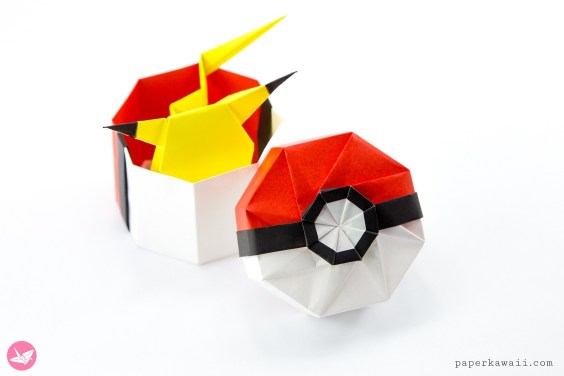

What is Origami?
Origami
Origami is the art of paper folding, which is often associated with Japanese culture. You basically make animals, objects and etc with a piece of paper.

Few facts about Pokemon
- The gender of a Pickachu can be determined by its tail
- Pokemon were once people
- You can sell Pokemon cards and get money. The highest a Pokemon card was sold to was $190,000
- Very Scary and Weird Fact, Drifloon kills children
- Pokemon is short for Pocket Monster
- Pokemon is the second best selling franchise of all time